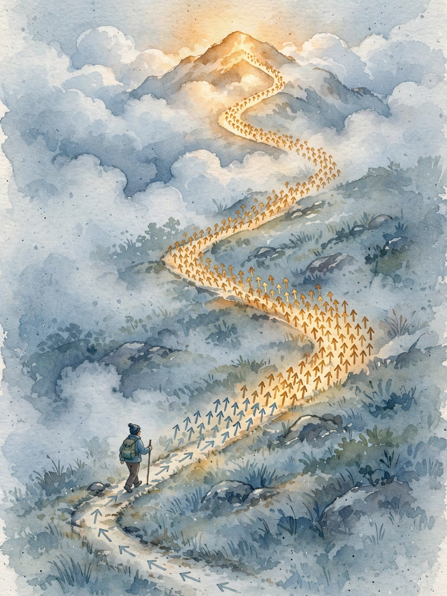
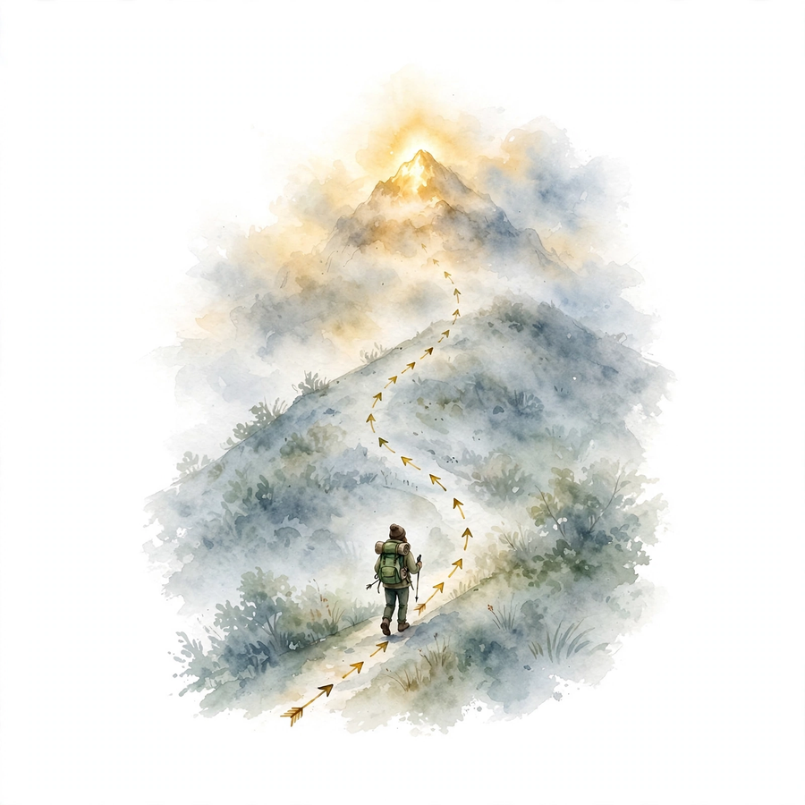

Unit 09 · Two cultures of generation
One culture learns a field of arrows and climbs it. The other predicts the next token, one at a time, and never looks back.
From the lesson The idea, and every number beside it, comes from the cited section of content/v2/math-genai/lessons/u09/lesson-09-score-and-autoregressive.md. The phrasing is the companion's. No lecture transcript exists for this unit.
Illustration Invented by the companion: an analogy, a toy with made-up values, or a what-if. Never lecture content.
companion The idea above the tag carries a lesson anchor. The generalization below it is the companion's own voice.
Narrated from the lesson content. The lesson is locally authored bridge material. It states that it does not reproduce the instructor lectures, and no transcript was inspected. All numbers below were computed in the lesson on 2026-10-06 (numpy 1.26.4, float64, seed 0 where RNG is used, compute_run5b.py reproduces every one). Log base 2 in bits for likelihoods. Natural log inside the score algebra.
Watch the lecture
Official lecture video: W9L35: DDPMs as score-predictors (YouTube).


Two running toys. From the lesson C01-C12 Score toy: p(x) = 0.5 N(−1.5, 0.25) + 0.5 N(1.5, 0.25), a symmetric two-mode density. AR toy: vocabulary {a, b, c, d} (ids 0..3), bigram matrix P (rows: from-token, cols: to-token), sequence [a, b, c] = [0, 1, 2]. Transformer toy: d = 4, one head, identity QKV. Sampling logits: [2.0, 1.0, 0.5, 0.1]. The arc: learn to point uphill (C01-C04), predict next one token at a time (C05-C08), then likelihood, sampling, budgets, and the verdict between the cultures (C09-C12).
For a density p(x), the score is s(x) = d/dx log p(x). From the lesson C01 It points uphill: where p rises, s > 0. At modes, s = 0. It never needs the normalizer: log p = log p_unnorm − log Z, and d/dx kills log Z. Two densities differing only by Z share the score. The lesson mental model: a vector field of arrows. Follow the arrows and you climb to a mode. The arrows do not tell you the height, only the slope.
On the mixture: s(0) = 0 by symmetry, s(1.0) = 1.999926 (left of the right mode, pointing right), s(1.5) ~ 0 (the mode, below 1e-6), s(−1.0) = −1.999926 (mirror). From the lesson C01 p(0) = 0.008864: the valley is deep, which is why mixing is slow. The failure case: s(x) = 0 at the valley x = 0 too. Following the score from exactly 0 goes nowhere. Stationary points are not all modes. Langevin noise rescues this. Deterministically following the score does not.
Perturb: x_tilde = x + sigma z, z from N(0, 1). From the lesson C02 The score of the perturbed density at x_tilde has a closed form given the clean x: (x − x_tilde) / sigma². Train s_theta(x_tilde) to match it by squared error. No normalizer, no MCMC, just regression. The lesson mental model: add noise, then learn to point from the noisy point back toward the clean one. The target is the arrow from x_tilde to x, scaled by 1/sigma².
On the toy: x = 1.5, x_tilde = 1.7, sigma² = 0.04. Target = (1.5 − 1.7) / 0.04 = −5.0. From the lesson C02 Loss for s_hat = −4: (−4 + 5)² = 1.0. Halving sigma quadruples the target magnitude. The failure case: sigma too small. The perturbed density equals the clean one, valley regions get no samples, and the learned score is garbage there. Sigma too large: everything is one blur, fine detail lost. Use a ladder of sigmas.
Bench. Point back to clean. Illustration Lesson rule: target = (1.5 − x_tilde) / 0.04, clean x = 1.5, sigma² = 0.04.
DSM target = -5.0000
Gradient ascent on log p would climb to a mode and stick. From the lesson C03 Langevin adds the right noise: x ← x + (a/2) s(x) + sqrt(a) z. The drift climbs, the noise explores, and the stationary distribution is p (for small a). It is MCMC with the score as the driver. The lesson mental model: a drunk hiker who mostly walks uphill. The uphill bias finds the modes, the drunkenness visits them in proportion to their mass.
Toy run, a = 0.1, start 0, seed 0: 0.0 → 0.039759 → 0.060272 → 0.354732 → 0.608576 → 0.617063. From the lesson C03 The chain leaves the valley and climbs toward 1.5. Mixing over 20000 steps, seed 1: a = 0.1 gives mean 0.1610, std 1.5873 (true 1.5811), frac(x > 0) = 0.56, only 56 valley crossings. a = 0.5: mean 0.0428, std 1.6385, frac 0.517, 414 crossings. Small steps mix slowly across the valley: the measured mean 0.161 is not 0 because 20000 steps are not enough at a = 0.1. The lesson states this predicted-vs-measured gap openly, and it is the reason diffusion anneals the noise.
The DDPM forward chain is a discretization of an SDE: dx = f(x, t) dt + g(t) dw. From the lesson C04 Every such SDE has a deterministic twin, the probability-flow ODE, with the same marginals: dx = [f(x, t) − 0.5 g(t)² s(x, t)] dt. DDIM with eta = 0 discretizes the ODE, eta = 1 discretizes the SDE, Langevin is the SDE at fixed noise. The lesson mental model: one river (the SDE), one canal (the ODE). Same water levels at every bridge (the marginals), different journeys. The score steers both.
VP toy: f = 0, g = sqrt(beta), beta = 0.1, sampling step h = 0.1: x ← x + 0.5 × 0.1 × s(x) × 0.1. From the lesson C04 From x = 1.0: s(1.0) = 1.999926, dx = +0.00999963, x = 1.00999963: toward the mode at 1.5, uphill on log p. Deterministic, no z. Eval budget: Langevin needed 20000 steps for 56 crossings, the ODE needs about 50 evals for a full trajectory. Sign warning from the lesson: the ODE above runs in forward time (data to noise). Sampling runs it backward, which flips the sign of the update. The failure case: large dt on a stiff score. Euler overshoots and oscillates. Adaptive step sizes exist for this reason.
p(a, b, c) = p(a) p(b | a) p(c | a, b). From the lesson C05 Each factor is a classifier over the vocab given the prefix. The log-likelihood is a sum, so training is n small classification problems, not one giant joint problem. The bigram toy truncates the history to one token: p(c | a, b) = P(c | b). The lesson mental model: the chain rule turns writing a sequence into always guessing the next token.
On the toy: P(b|a) = 0.6, P(c|b) = 0.5. From the lesson C05 NLL = −log2(0.6) − log2(0.5) = 0.73697 + 1.0 = 1.73697 bits (the first token a has no factor in the bigram model). Perplexity = 2^{1.73697/2} = 1.82574: the model is as confused as a 1.83-sided die per token. The failure case: factorizing in a bad order (right to left for text). Valid math, terrible modelling. The order is a modelling choice, and the natural order carries the inductive bias.
Teacher forcing feeds the true prefix at every step during training: the loss for x_2 uses the true x_1. From the lesson C06 This parallelizes (all positions at once with the mask) and stabilizes (gradients do not pass through sampling). At test time the model feeds its own x_1_hat, which may be wrong, then x_2 is conditioned on a prefix the model never saw in training. That mismatch is exposure bias. The lesson mental model: training wheels. The model learns to ride while you hold the seat. At test time you let go, and the first wobble compounds.
On [a, b, c]: teacher-forced NLL 1.7370 bits, 0.8685 per token. From the lesson C06 Free-run expected NLL: 3.2675 bits, 1.6338 per token. Exposure gap: 0.7653 bits per token. The gap comes from wrong-prefix mass: when the model samples d (prob 0.1), the next factor is uniform and costs 2.0 bits for c. The failure case: pure free-run training from scratch. Slow, high-variance, often diverges early. The curriculum is: teacher-force first, then correct.
Attention lets position i read positions 0 to n−1. From the lesson C07 The causal mask sets scores for j > i to −inf before the softmax, so position i attends only to 0..i. One forward pass then computes all n next-token predictions in parallel, each with exactly its training-time prefix. The lesson mental model: blinders. Each position sees its past, never its future. The mask is what makes parallel training honest.
Toy Q = K = [[1,0],[0,1],[1,1]]. From the lesson C07 Scores/sqrt(2): [[0.7071, 0, 0.7071], [0, 0.7071, 0.7071], [0.7071, 0.7071, 1.4142]]. Masked softmax rows: [1, 0, 0], [0.3302, 0.6698, 0], [0.2483, 0.2483, 0.5035]. Position 0 sees only itself, position 2 sees all three with weights summing to 1. The failure case: mask off by one (allow j ≤ i+1). Position i sees x_{i+1}, the loss for predicting x_{i+1} collapses, and eval perplexity looks miraculous until generation. Test: row 0 must be [1, 0, 0], not [0.5, 0.5, 0].
Embed each token: X = E + P, shape (3, 4). From the lesson C08 Project: Q, K, V = X W (identity here, so Q = K = V = X). Score: S = XX^T/2. Mask causal, softmax rows: A. Output: O = A X. The lesson mental model: attention is a content-addressable memory read. The query asks which past positions matter for predicting next, the keys answer, the values deliver. The mask enforces honesty, the positions break symmetry.
Output rows: [1, 0, 1, 0], [0.3214, 0.8294, 0.3214, 0.8294], [0.8617, 0.8964, 0.3581, 0.3928]. From the lesson C08 Row 0 equals X row 0 exactly (it can only see itself). Position 1 mixes rows 0-1 with [0.3302, 0.6698]. Position 2 mixes all three with [0.2483, 0.2483, 0.5035]. Removing the positional encoding changes row 1 by 0.0983 max: positions matter. After attention (not on the toy): residual add, layer norm, feedforward, repeat per layer, then a final linear + softmax gives next-token probs. The failure case: forgetting the 1/sqrt(d) scale. With large d the softmax saturates, gradients vanish, training stalls. The toy d = 4 hides this, d = 64 does not.
NLL = −sum_i log2 p(x_i | its prefix). From the lesson C09 Perplexity = 2^{NLL/n}: the effective branching factor. On [a, b, c]: NLL = 1.73697 bits, perplexity 1.82574. Lower is better, bounded below by 1 (perfect) and above by V = 4 (uniform). The lesson mental model: perplexity translates bits into how many options the model seriously considers. 1.83 means nearly decided, 4 means guessing.
The failure case: reporting perplexity on different tokenizers side by side. From the lesson C09 The numbers are incomparable. Bits-per-byte repairs it. AR likelihood is a sum of logs: exact, and comparable across models on the same vocab.
Logits z = [2.0, 1.0, 0.5, 0.1]. From the lesson C10 Greedy: argmax = a. Temperature: softmax(z/T). T = 0.5: [0.8282, 0.1121, 0.0412, 0.0185], entropy 0.8754. T = 1: [0.5745, 0.2114, 0.1282, 0.0859], entropy 1.6174. T = 2: [0.4056, 0.2460, 0.1916, 0.1569], entropy 1.9017. The lesson mental model: temperature sets the adventure level, top-p/top-k cut the long tail of bad tokens. Same logits, different products.
Top-p = 0.9 under the lesson's convention (keep while cumsum below p): keep [0, 1], renorm [0.7311, 0.2689, 0, 0]. From the lesson C10 Conventions vary, and the lesson states this one. The failure case: T huge with no truncation. The tail (d at 0.1569) produces incoherence. Truncation exists because the tail is where the model is clueless.
Bench. Set the temperature. Illustration Lesson values for logits [2.0, 1.0, 0.5, 0.1].
p(a) = 0.8282 · entropy = 0.8754 bits
One attention matrix per head per layer: n² entries, 4 bytes each in fp32. From the lesson C11 Toy model: 12 heads, 12 layers. n = 1024: 12 × 12 × 1024² × 4 = 603979776 bytes = 0.60 GB. n = 4096: 16x = 9663676416 bytes = 9.66 GB. Quadrupling n multiplies memory by 16. The lesson mental model: context is rented by the square. Twice the context, four times the attention memory. The KV cache adds 2 × L × h × d × n × b bytes on top, linear in n.
Bench. Price the context. Illustration Lesson rule: GB = 12 × 12 × n² × 4 / 2^30.
attention memory = 0.60 GB
The failure case: budgeting weights only and forgetting activations. From the lesson C11 At n = 4096 the attention matrix (9.66 GB) can exceed the weights. Budget all three: weights, cache, attention.
The score culture represents p via its gradient field. From the lesson C12 Strengths: no normalizer, natural for continuous data, one net serves many samplers. Costs: no exact likelihood, sampling needs many steps or an ODE solver, training needs the noise ladder. The AR culture represents p via ordered conditionals. Strengths: exact likelihood (1.73697 bits on the toy), simple training (teacher forcing). Costs: the order is fixed and load-bearing, O(n²) memory, sequential sampling, exposure bias (0.7653 bits per token on the toy).
| Axis | Score culture | AR culture |
|---|---|---|
| Likelihood | none exact | exact sum of logs |
| Sampling | parallel-ish (ODE) | sequential |
| Order | none needed | fixed, load-bearing |
| Training signal | denoising regression | next-token CE |
| Failure mode | slow mixing (56 crossings) | exposure bias (0.77 b/tok) |
| Data fit | continuous | discrete sequences |
The lesson verdict: landscapes suit images (order-free, continuous), tours suit text (ordered, discrete). From the lesson C12 Hybrids exist: AR in a learned latent space (VQ-VAE + AR prior, U06-C07), diffusion on discrete tokens. The failure case: picking by fashion. Match the representation to the data and the metric, not to the trend.
The lesson closes with a ledger. From the lesson Chapter plate Cost without the ideas: the normalizer blocks learning, the valley traps the sampler, the future leaks into training, and context bills by the square. Cost with the ideas: one field (scores 1.999926 at x = 1.0, 0 at the modes), one regression (target −5.0, loss 1.0), one hiker (56 crossings at a = 0.1, 414 at a = 0.5), one canal (ODE step to 1.00999963 in ~50 evals), one factorization (1.73697 bits, perplexity 1.82574), one gap (0.7653 bits per token), one mask (row 0 = [1, 0, 0]), one pass (rows mix [0.3302, 0.6698] and [0.2483, 0.2483, 0.5035]), one knob (entropy 0.8754 to 1.9017), one budget (0.60 to 9.66 GB), and one verdict (images to the field, text to the tour). Tradeoff in one line: the score culture buys normalizer-free learning at the cost of slow mixing, and the AR culture buys exact likelihood at the cost of exposure bias and quadratic memory.
Every lesson on this page, in order. Tap one to return to its chapter.